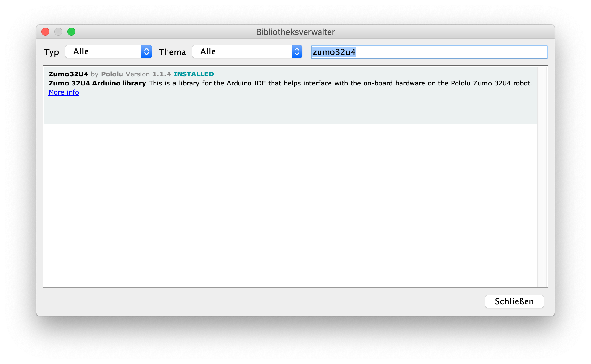

Installation
Bevor der Zumo mit der Arduino-Programmierumgebung programmiert werden kann, muss die Bibliothek Zumo32u4 eingebunden werden. Auch wenn der Zumo ohne die Bibliothek programmiert werden kann, stellt die Bibliothek viele Methode zur Verfügung, welche das Steuern der LEDs, der Motoren, der Sensoren, des Displays, etc. deutlich vereinfacht.
Treiber für Windowssysteme
Unter Windows muss außerdem ein Treiber für den Mikrocontroller des Zumo 32u4 installiert werden (unter Linux und macOS nicht notwendig). Auf den Schulrechnern sollte der Treiber bereits installiert sein. Ein ausführliche Anleitung zur Installation des Treibers (A-Star 32u4) ist auf der Pololu Webseite hier zu finden.
A-Star Board des Zumo 32u4 bei Arduino einbinden (optional)
Der Zumo 32u4 hat einen sogenannten Bootloader, welcher es ermöglicht die von Ihnen am Rechner geschrieben Programme auf den Mikrocontroller zu laden. Der Bootloaders kann in der Arduino IDE mit dem Boardverwalter eingebunden werden. Nach erfolgreichem Einbunden des Boards, kann unter Werkzeuge>Board Pololu A-Star 32U4 als Board für den mit dem Rechner verbundene Zumo 32u4 ausgewählt werden.
Wenn Arduino nicht für den Pololu A-Star 32U4 Bootloader eingerichtet wurde, sollte unter Werkzeuge>Board das Board Arduino Leonardo ausgewählt werden.
Zumo32u4 Bibliothek
Automatische Installation
Zum Einbinden der Zumo-Bibliothek wird der Bibliotheksverwalter geöffnet:
- Arduino 1.8.9: Werkzeuge > Bibliothek verwalten
- Arduino 1.8.5: Sketch > Bibliothek einbinden > Bibliotheken verwalten
Im Suchfeld (Grenzen Sie Ihre Suche ein ...) geben sie "zumo32u4" ein. Klicken Sie bei der Bibliothek Zumo32u4 by Pololu Version xxx auf Installieren.
Nach erfolgreichen Installation sollte der Bibliotheksverwalter wie folgt aussehen: 
Manuelle Installation
Bei der manuellen Installation, muss die gezippte Bibliothek herruntergeladen werden, um sie anschließend ins Arduinoverszeichniss zu kopieren.
- Laden Sie die Zumo 32u4 Bibliothek von Github als zip-Datei (Clone or Download > Download ZIP) und speichern Sie sie.
- Öffnen Sie Arduino.
- Wählen Sie unter Sketch > Bibliothek einbinden > .ZIP-Bibliothek hinzufügen ... aus und geben Sie die abgespeicherte ZIP-Datei an.
- Starten Sie Arduino neu.
- Die Bibliothek wurde richtig installiert, wenn Sie unter Datei>Beispiele ganz unten einen neuen Eintrag Zumo32u4 sehen.
Alternative Installation
- Laden Sie die Zumo 32u4 Bibliothek von Github als zip-Datei (Clone or Download > Download ZIP) und entpacken Sie diese anschließend.
- Benennen Sie das entpackte Verzeichnis "zumo-32u4-arduino-library-master" in "Zumo32U4" um.
- Suchen Sie auf Ihrem Rechner das Sketchbook-Verzeichnis. In der Arduino IDE wird das Sketchbook-Verzeichnis unter Datei>Einstellungen>Sketchbook-Speicherort angezeigt. In diesem Verzeichnis sollte ein Unterverzeichnis Arduino/libraries/ zu finden sein, in welches Sie das entpackte Bibliotheksverzeichnis Zumo32U4 kopieren. Sollte das Library-Verzeichnis nicht existieren, erstellen Sie dieses.
- Starten Sie die Arduino-IDE neu. Die Bibliothek wurde richtig installiert, wenn Sie unter Datei>Beispiele ganz unten einen neuen Eintrag Zumo32u4 sehen.